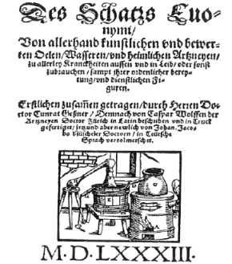

ŞEKİL 91. Conrad Gesner’den çevrilen Arzneibuch (Zürih, 1583)
adlı eserin başlık sayfasında damıtma düzeneği.141
Güzel kokulu oryantal maddeleri işleme ve karıştırma sanatı Ortaçağ’da Haçlı Seferleri (11.-13. yüzyıl) yoluyla Avrupa’ya ulaştı. Antikçağın “yeniden doğuşu” olan Rönesans döneminde, erotikleştirici parfümler yeniden önem kazandı. İtalya’dan başlayarak parfümler Catherine de’ Medici’nin güçlü katkılarıyla canlılık kazandı. 14 yaşındaki Catherine de’ Medici ile birlikte 1533 yılında Paris’e giden kimya bilgisi sahibi ve parfüm hazırlayıcı İtalyan René le Florentin, ilk İtalyan parfümeri kuruluşunu Pont-aux-Changes’da açtı. Güney Fransa kenti Grasse’ın uygun ikliminde Hindistan, İran ve İberya yarımadasından “ithal edilen” limon, karanfil, sümbülteber ve yasemin başarılı bir şekilde yetiştirildi. Burada damıtma, suyunu sıkma; sıvı yağ, katı yağ ve çözücülerle özütleme gibi mevcut teknikler uygulandı. Ayrıca yaygın su buharı damıtması ile uçucu yağını bırakmayan duyarlı çiçekler, petrol eteri gibi uçucu çözücüler yardımıyla özütlendi. “Güneş Kral” (“Roi Soleille”) XIV. Louis (yön. 1643-1715) döneminde kozmetik kullanımı alabildiğine güçlenerek insanlar daimî olarak delicesine bir tutku ile kabarık perukalar takıyor, daha güzel ve daha ilginç görünebilmek için yüzlerine güzellik yakıları yapıştırıyor ve perukalar, yüzler, giysiler ve tüm beden pudralanıyor, kadınlar ter kokularını gidermek için koltukaltlarına içi kokulu bitkilerle dolu keseler koyuyorlardı. Çoğu zaman güçlü parfümlenmiş pudralar, beden kirini ve bedendeki kötü kokuyu uzaklaştırmaya yönelikti; çünkü o zamanlar pek çok insan, haftalar boyu banyo yapmamak gibi bir alışkanlığa sahipti.159 Kral XIII. Louis’nin gözde parfümü neroli idi. XIV. Louis’nin metresi Madame de Montespan (1640-1707), XV. Louis’nin gözdeleri Madame de Pompadour (1721-1764) ve Madame du Barry (1743-1793) ile XVI. Louis’nin (yön. 1774-1793) eşi Kraliçe Marie-Antoinette (1755-1793), aşırı biçimde parfüm düşkünü ve tüketicisi idiler.178 Güzel kokuların son “altın çağı”, XV. Louis (yön. 1715-1774) Fransa’sında yaşandı. XV. Louis, krallık binalarının, giysi ve mobilyalara varıncaya dek her gün farklı bir parfümle spreylenmesini buyurmuş ve sarayı, “parfümlü saray” diye ünlenmiştir. Bu dönemde saraylı kadınlar her gün ayrı bir koku kullanıyordu ve Markiz Pompadour, güzel kokular için yılda 500 bin Livres’den fazla harcama yapıyordu. O dönemde, konuşurken ağızdan yayılacak güzel kokulu nefesle karşıdaki insanı etkilemek için, ağzın içinde içi parfüm dolu küçük şişecikler bulundurulması da yaygın bir moda idi (ŞEKİL 92).164